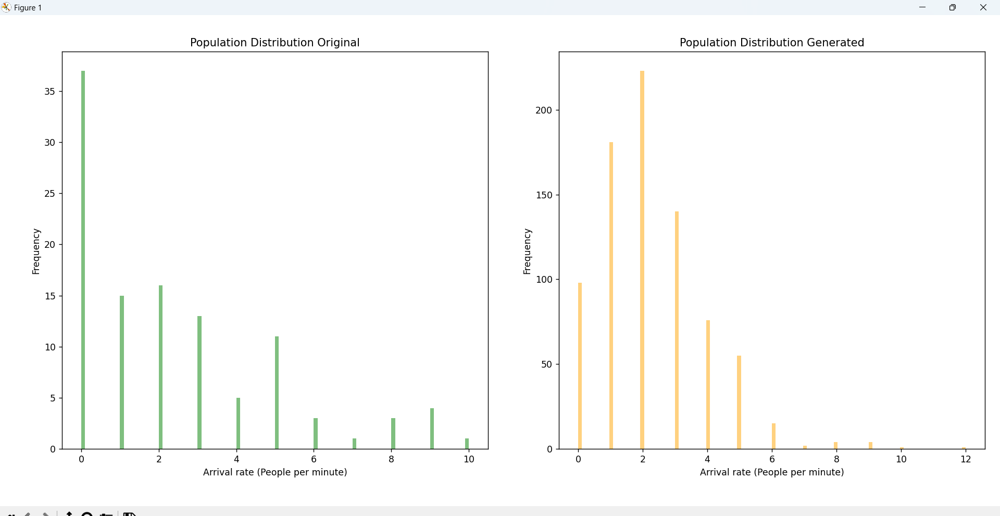

Simulation and analysis of university cafeteria performance:
Queuing model for throughput in the university cafeteria, identification of bottlenecks, and proposal of solutions to optimize throughput times.
University canteens play a pivotal role in supporting students by providing reliable nutrition and a space
for social interaction. However, the bustling nature of these canteens often leads to challenges in
managing the flow of customers efficiently, resulting in long queues, extended service times, and an
overall suboptimal experience.
Recognizing the need to address these issues, I participated as a master's student in a team focused on
developing queuing models aimed at enhancing the efficiency of university canteens.
Under faculty supervision, we were tasked with simulating a queuing model to replicate the operational
dynamics of our university canteen. This endeavor aimed to help us better understand the entire queuing
process - from the moment a student arrives at the canteen counter to the completion of their payment.
The objectives of this simulation project were twofold: first, to gain deeper insight into the complex
interactions between customers, service providers, and available resources; and second, to identify
potential bottlenecks within the existing system.
This project explores the methodologies employed, the significance of queuing theory - an established
branch of operations research - and how it applies to the context of university canteens. We also discuss
the challenges encountered during the simulation process, the key findings that emerged from the analysis,
and the proposed solutions to address the identified bottlenecks.
By shedding light on this research, we aim to foster a broader conversation about the practical
applications of queuing models in real-world scenarios and present effective solutions to increase
capacity, reduce service times, and ultimately optimize the overall customer lead time.
STEP 1: Business Understanding
I. Queuing Theory:
The university canteen project shares several characteristics with queuing theory, a mathematical framework
used to model queue-based service environments such as convenience stores, restaurants or emergency
services, as well as in business operations like telecommunications, logistics and banking.
Queuing theory helps optimize resource allocation and improve customer service by identifying bottlenecks
through the calculation of the utilization factor for each station.
II. Data generation:
Another key component of this project is the generation of data for simulation models. Data generation is
instrumental in defining probability distributions for input variables such as arrival rates and service
times. Using Monte Carlo simulation, we generated large sets of random samples to simulate various
scenarios within the queuing system.
Key Performance Indicators (KPI) focused on operational value added to the canteen, particularly
emphasizing capacity, lead times, and the utilization factor of each service station.
STEP 2: Data Understanding
As with any queuing model, customers arrive at the system following a specific arrival process, typically
modeled using Poisson or exponential distributions. Upon arrival, if a server is available, the customer is
served immediately and then proceeds to the next station to complete payment.
To accurately represent the canteen’s queuing system, we considered the following customer states: arrival
at the canteen, interaction with cafeteria staff to order and receive food (first service station), and
payment at the cashier (second service station).
To simulate this system, we applied a Markov chain— a stochastic model consisting of defined states and
transition probabilities between them. Markov queuing processes enable simulation and analysis of system
behavior under varying conditions, operating without memory (future states are not influenced by past
events).
In queuing theory, Kendall’s notation is used to describe and classify queuing nodes. In our case, the
system is represented as M/M/1/1/∞/∞/FIFO, denoting a Markovian arrival process and service times,
one server per station, unlimited queue capacity, and a first-in, first-out service discipline.
STEP 3: Data Preparation
Based on the insights gained during the data understanding phase, we identified the most critical elements
of the queuing system. These were manually captured through direct visits to the university cafeteria,
during which we observed and recorded key details such as peak times when customer demand was highest.
Once sufficient data on arrival rates and service times had been collected, we applied chi-square tests to
evaluate how well the observed data fit a Poisson distribution. As the volume of collected data increased,
the p-value of the chi-square test also rose. After gathering approximately 150 data points, we proceeded
with the Data generation process.
NOTE: To ensure consistency and minimize observer bias, data was collected across multiple days and
time slots, excluding weekends.

def augment_poisson(data_augmented, sim_iteration, label):
plt.figure(figsize=(10, 5))
plt.subplot(1, 2, 1)
data_augmented[1].plot(kind="hist", alpha=0.5, label="Order", color="green", bins=100)
plt.xlabel(f"{label} (People per minute)")
plt.ylabel("Frequency")
plt.title("Population Distribution Original")
mean = data_augmented[1].mean()
samples = np.random.poisson(mean, size=sim_iteration)
new_data = pd.DataFrame({1: samples})
data_augmented = pd.concat([data_augmented, new_data], ignore_index=True)
size_two = data_augmented.shape[0]
plt.subplot(1, 2, 2)
data_augmented[1].plot(kind="hist", alpha=0.5, label="Order", color="orange", bins=100)
plt.xlabel(f"{label} (People per minute)")
plt.ylabel("Frequency")
plt.title("Population Distribution Generated")
plt.tight_layout()
plt.show()
return data_augmented[1], size_two
Following the completion of data collection, we implemented Monte Carlo simulation to generate additional
data points based on the observed data sets. By analyzing the distribution of arrival rates and service
times, I developed two separate data generation functions—one for Poisson-distributed arrival rates and one
for exponentially-distributed service times. These functions generated up to 700 new data points,
replicating the characteristics of the original data distributions.
By defining probability distributions for input variables such as arrival rates and service times and
applying Monte Carlo simulation, we were able to simulate a wide range of scenarios. These scenarios
enabled the estimation of key performance indicators, including average waiting time, queue length,
system utilization, and the probability of delay.
Comparison between the original data and the generated data—based on mean values and distribution
patterns—confirmed that the generated data preserved the statistical properties of the original
dataset.

STEP 4: Data Exploration and Visualization
Exploring the datasets on arrival rates and service times provided early insights into the queuing system’s
behavior and performance. In queuing systems, critical performance metrics such as waiting times,
utilization factor, and lead times are derived through data exploration and are central to evaluating
system efficiency. These performance metrics are also useful for benchmarking different staffing scenarios
or service layouts that could be tested later on.
Using histograms and boxplots we were able to observe skewness, potential outliers and clustering patterns
within the datasets.

Waiting Time: This metric refers to the time a customer spends in the queue before being served. It
is calculated by measuring the difference between the time of arrival and the start of service.
Lead Time: Lead time captures the total time a customer spends in the system, from arrival to the
completion of service. It includes both waiting and service time and is calculated by tracking the full
customer journey.
Utilization Factor: The utilization factor represents the percentage of time that service stations
(servers) are actively serving customers relative to their total availability. It is a key indicator of
system capacity and efficiency.
STEP 5: Feature Engineering
To accurately calculate these performance metrics in a simulation model, it is necessary to capture precise
timestamps for customer arrivals, service start, service end, and departure. In our simulation model, we
defined the following key elements:
--> 'Client Number'
-->'Arrival Rate'
--> 'Waiting time before
Canteen'
--> 'Service Time Canteen'
--> 'Waiting time before Cashier'
--> 'Service Time Cashier'
--> 'Lead Time'
By tracking these values and applying suitable algorithms, we were able to compute the waiting times, lead
times, and utilization factors necessary to evaluate system performance and highlight opportunities for
operational improvement. The purpose of creating these features is not only to track customer movement
through the system but also to maintain traceability of the simulation output.
avg_arrival_rate = np.mean(new_arrival) / 60
avg_service_time_uno = new_order.mean()
avg_service_time_dos = new_cashier.mean()
capacity_canteen = 1
capacity_cashier = 1
utilization_factor_canteen = (avg_arrival_rate * avg_service_time_uno) / capacity_order
utilization_factor_cashier = (avg_arrival_rate * avg_service_time_dos) / capacity_cashier
client_data = pd.DataFrame(columns=['Client Number', 'Arrival Rate', 'Waiting time before Canteen', 'Service Time Canteen', "Waiting time before Cashier", "Service Time Cashier", "Lead Time"])
client_data["Waiting time before Canteen"] = (client_data["Waiting time before Canteen"] - client_data["Service Time Canteen"]).abs()
client_data["Waiting time before Cashier"] = (client_data["Waiting time before Cashier"] - client_data["Service Time Cashier"]).abs()
client_data["Lead Time"] = client_data[['Waiting time before Canteen', 'Service Time Canteen', "Waiting time before Cashier", "Service Time Cashier", "Lead Time"]].sum(axis=1)
STEP 6: Model Building and Training
For this queuing system simulation, we used Python and integrated the SimPy library, a discrete event
simulation (DES) package designed to model dynamic process behavior and resource management. SimPy allowed
us to recreate the canteen environment, simulating how resources (canteen and cashier stations) interact
with arriving customers.
The python code replicates queuing behavior by randomly selecting values from the three generated datasets,
representing the inherent variability in daily cafeteria operations. The random selection process ensures
that every simulation run presents a different variation, which allows for better stress-testing of the
system.
In the arrival process, the first station (Canteen) receives inter-arrival times from the
"arrival_process_stations" function and processes service durations through the "service_process_canteen"
function. Once a customer's request is completed, it is passed to the second station (CASHIER), which is
simulated using the service_process_cashier function.
env = simpy.Environment()
server_number_uno = simpy.Resource(env, capacity=capacity_order)
server_number_dos = simpy.Resource(env, capacity=capacity_cashier)
station_canteen = simpy.Store(env)
queue_between = simpy.Store(env)
station_cashier = simpy.Store(env)
env.process(arrival_process_stations(env, client_number=0, client_data=client_data))
env.run(until=(3600 * work_days))
# What is simpy.Environment()?
Within the SimPy library, the Environment class represent the environment where events occur and are scheduled, following key features exclusive to the SimPy library like Simulation Time, Event Scheduling and Handling, Process Execution, etc.
# What is simpy.Resource()?
Within the SimPy library, the Resource class represents the contention capacity within a station, it represents how many processes can run concurrently. Within the python code, customers generate request() in order to get access to the resource and are then release() once the task is completed.
# What is simpy.Store()?
Within the SimPy library, the Store class represents the queues, buffers, or holding areas where simulation processes put events if the Resource() is occupied. The Resource() class retrieves events by using the get() function.
Arrival events are generated by sampling random arrival rate values (measured in arrivals per minute),
which are converted into inter-arrival times to determine how long the system waits before processing the
next customer.
Each new customer is assigned a client number and added to the canteen queue (station_order) using the
put() method. The canteen station processes customers via the get() method, tracking the
customer's arrival time, waiting time before service, and time spent in the service station.
def arrival_process_stations(env, client_number, client_data):
while True:
arrival_select = np.random.choice(new_arrival.values)
client_data.loc[client_number, 'Arrival Rate'] = arrival_select
if arrival_select != 0:
interarrival_time = 60 / arrival_select
else:
interarrival_time = 60
yield env.timeout(interarrival_time)
client_number += 1
station_order.put((env.now, client_number))
env.process(service_process_order(env, client_data))
def service_process_cashier(env, client_data):
while True:
with server_number_dos.request() as request:
yield request
arrival_time, client_number = yield station_cashier.get()
service_time_dos = np.random.choice(new_cashier.values)
yield env.timeout(service_time_dos)
client_data.loc[client_number, "Service Time Cashier"] = service_time_dos
client_data.loc[client_number, 'Waiting time before Cashier'] = env.now - arrival_time
env.process(service_process_cashier(env, client_data))
The cashier station operates similarly: it retrieves the next customer from the intermediate queue
(station_cashier) using the get() method and records the waiting time before the cashier, the
service time, and the total time spent at the station.
Once the cashier process is completed, the simulation calculates the lead time for each customer. After the
simulation run, system-wide metrics are computed, including the utilization factors of both stations and
the total number of customers served.
STEP 7: Model Evaluation and Comparison
To assess the accuracy of the simulation, we calculated the utilization factor of each station using two
approaches: first, by applying the average arrival and service times from the dataset, and second, by
manually computing utilization using the timestamps recorded during the simulation.
Results from the dataset:
+ Utilization factor of the CANTEEN station: 1.4912927763838917
+ Utilization factor of the CASHIER station: 0.9009195651771269
Results from the simulation model:
+ Utilization factor of the CANTEEN station: 1.498312288696883
+ Utilization factor of the CASHIER station: 0.9030687642105081
NOTE: This comparison helps to validate that the expected values from the dataset align with the
behavior captured during the simulation.
Both visual inspection of the simulation and the utilization factor results confirm that the primary
bottleneck occurs at the canteen service station. This bottleneck was further evaluated by increasing the
number of servers at this station to observe the effect on utilization and waiting times.
Average measures from a (1 Server per Station):
+ Waiting time before Canteen 10020.542148
+ Service Time Canteen 38.377895
+ Waiting time before Cashier 15.112265
+ Service Time Cashier 23.131278
+ Lead Time 9042.589862
Client Number 1
Waiting time before Order 0.0
Service Time Order 22.832561
Waiting time before Cashier 0.0
Service Time Cashier 51.881967
Lead Time 74.714528
Name: 1, dtype: object
Client Number 48
Waiting time before Order 391.274495
Service Time Order 38.645774
Waiting time before Cashier 0.0
Service Time Cashier 21.77937
Lead Time 451.699639
Name: 48, dtype: object